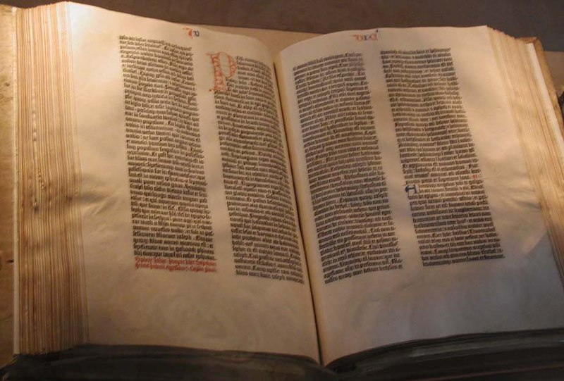

คัมภีร์ไบเบิล
คัมภีร์ไบเบิล[1] หรือ พระคัมภีร์ (อังกฤษ: Bible; ฮีบรู: ביבלי; แอราเมอิก: ܟܬܒܐ ܩܕܝܫܐ; กรีก: Αγία Γραφή) (มาจากภาษากรีกโบราณว่า Βίβλος บิบลิออน แปลว่า หนังสือ) ชาวโปรเตสแตนต์เรียกว่า พระคริสตธรรมคัมภีร์ (Holy Bible) เป็นหนังสือที่บันทึกเรื่องราวเกี่ยวกับพระยาห์เวห์ มนุษย์ บาป และแผนการของพระยาห์เวห์ในการช่วยมนุษย์ให้รอดพ้นจากความพินาศอันเนื่องจากความบาปสู่ชีวิตนิรันดร์ เป็นหนังสือที่บันทึกหลักธรรมคำสอนของศาสนาคริสต์ ซึ่งในบางเล่มมีพื้นฐานมาจากหลักคำสอนของศาสนายูดาห์ของชาวยิว ชาวคริสต์เรียกคัมภีร์ไบเบิลในชื่ออื่น ๆ อีกหลายชื่อ เช่น พระวจนะของพระเจ้า (Word of God) หนังสือดี (Good Book) และคัมภีร์ศักดิ์สิทธิ์ (Holy Scripture)
คริสตชนทุกคนเชื่อว่าพระคัมภีร์ทุกบททุกข้อนั้นมนุษย์เขียนขึ้นโดยการดลใจจากพระเจ้า ประกอบด้วยหนังสือจำนวน 66 หรือ 73 หรือ 78 เล่ม (แล้วแต่นิกาย) ประกอบด้วยภาคพันธสัญญาเดิมและพันธสัญญาใหม่ พันธสัญญาเดิมถูกเขียนขึ้นก่อนที่พระเยซูคริสต์ประสูติ ทั้งหมดเขียนเป็นภาษาฮีบรู ยกเว้นส่วนที่เป็นคัมภีร์อธิกธรรม (ยอมรับเฉพาะชาวคาทอลิก) ถูกเขียนด้วยภาษากรีกและภาษาอียิปต์ ส่วนพันธสัญญาใหม่ถูกเขียนขึ้นหลังจากพระเยซูเสด็จขึ้นสู่สวรรค์แล้ว โดยบันทึกถึงเรื่องราวของพระเยซูตลอดพระชนม์ชีพ รวมทั้งคำสอน และการประกาศข่าวดีแห่งความรอด การยอมรับการทรมาน และการไถ่บาปของมนุษย์โดยพระเยซู การกลับคืนชีพอย่างรุ่งโรจน์ การส่งพระวิญญาณบริสุทธิ์มายังอัครทูต ประวัติศาสตร์ของคริสตจักรในยุคแรกเริ่ม ภายหลังการกลับคืนพระชนม์ชีพของพระเยซูแล้ว การเบียดเบียนคริสตจักรในรูปแบบต่าง ๆ
พระคัมภีร์เป็นที่ยอมรับอย่างกว้างขวางว่าเป็นหนังสือที่ขายดีที่สุดของเวลาทั้งหมดที่มียอดขายต่อปีประมาณ 100 ล้านเล่มและได้รับอิทธิพลสำคัญในวรรณคดีและประวัติศาสตร